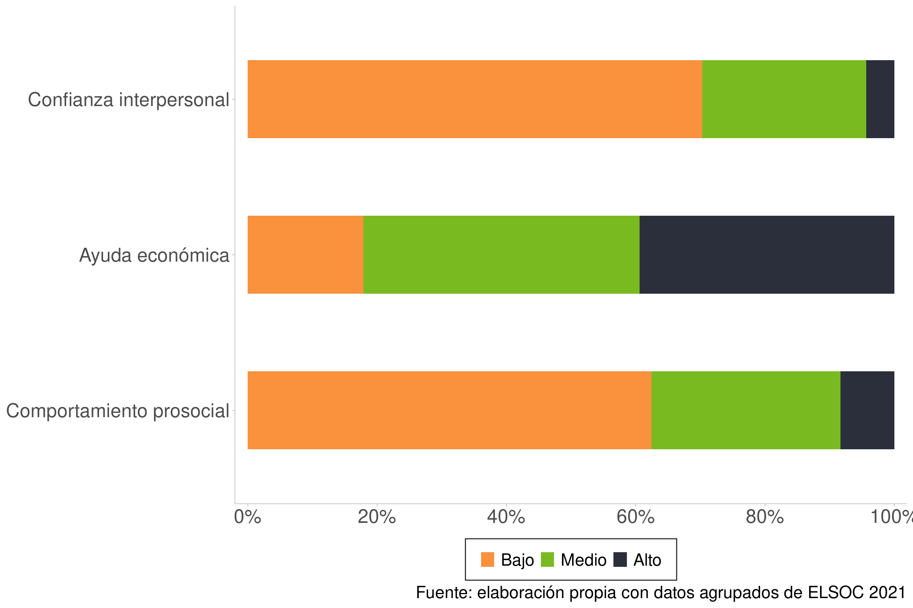
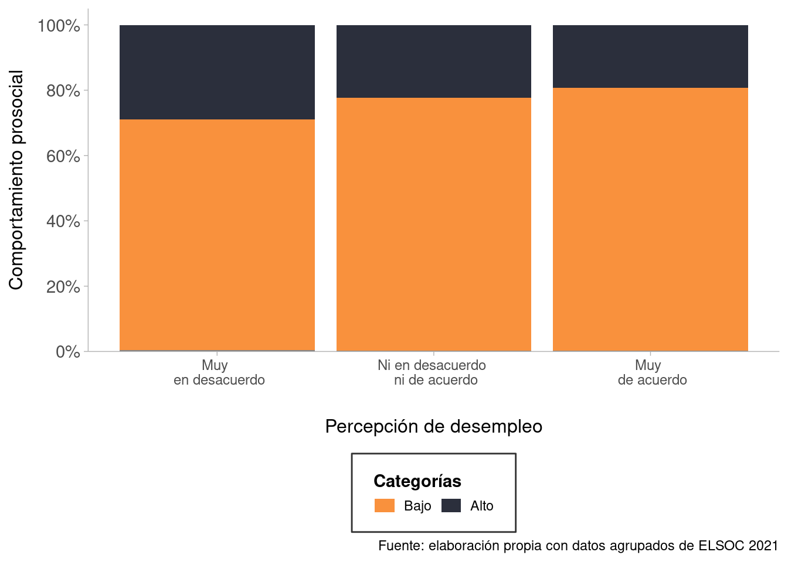
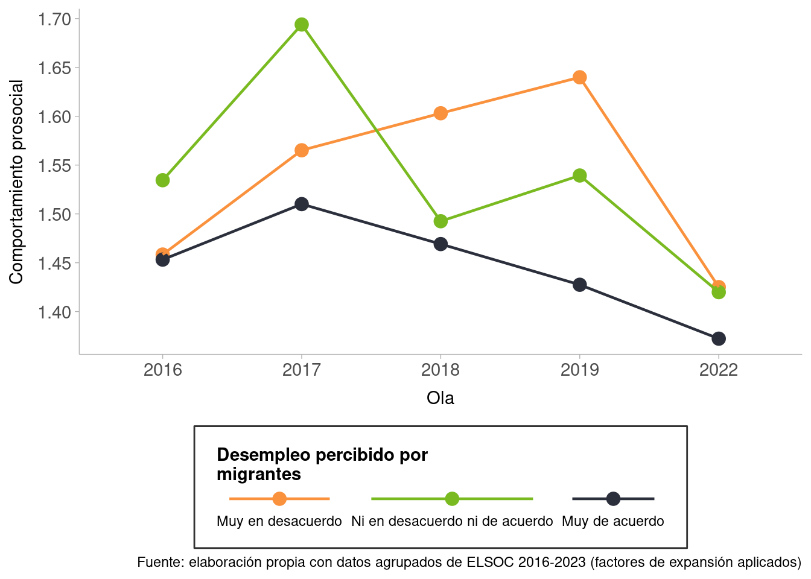

6 Cohesión Horizontal: Redes Sociales
6.1 Data
6.2 Recodificación Variables Redes
6.3 Descriptivos
La Figure 6.1 muestra las distribuciones de respuestas de los índices que conforman la subdimensión de redes sociales. En este caso, es importante observar que las personas tienen una tendencia muy marcada respecto a una baja confianza interpersonal y un bajo comportamiento prosocial, donde ambos índices concentran más del 60% en “Bajo”. En cambio, el índice de ayuda económica se comporta de manera distinta, donde la categoría que señala el grado más bajo es la que tiene el porcentaje menor, mientras que destaca la barra verde y negra, señalando que las personas prestan ayuda económica mayoritariamente en un nivel medio y alto.

6.4 Transversales

En la Figure 6.3 se analiza la asociación entre la percepción de aumento de desempleo debido a inmigrantes y el índice de comportamiento prosocial. Para la construcción de este índice se consideraron variables que medían el haber participado en reuniones públicas/sociales y el haber realizado voluntariados(si le interesa profundizar en cómo se construyó este y los demás índices, vaya al anexo).
Respecto al gráfico, se nota una tendencia de las personas a tener un bajo comportamiento prosocial, cuyo porcentaje es mayoría en las tres barras. Con mayor profundidad, se puede afirmar una asociación negativa entre la percepción de desempleo por la migración y el comportamiento prosocial. En otras palabras, mientras el comportamiento social es más bajo, se considera en mayor medida que los inmigrantes causan desempleo en el país.
En Figure 6.4 se observa un patrón bastante similar al anterior, en donde la disminución empleos disponibles por migración se correlaciona negativamente con confianza interpersonal. Es relevante señalar que persiste una diferencia muy tenue entre la categoría “muy en desacuerdo” y “ni en desacuerdo ni de acuerdo”, mientras que la disparidad más marcada se percibe al comparar las dos categorías anteriores con el máximo grado de acuerdo.
La Figure 6.5 muestra la relación entre el grado de acuerdo respecto a que los inmigrantes socavan la identidad del país con el índice de ayuda económica, el cual fue construido a partir de indicadores que miden las veces que alguien ha prestado dinero y ha ayudado a otra persona a encontrar trabajo.
Este gráfico sigue una lógica similar al de los dos anteriores, donde, a medida que las personas menos prestan ayuda económica a terceros, se piensa con mayor convicción que los inmigrantes irrumpen en la cultura nacional.
6.5 Redes sociales por género

La Figure 6.6 muestra la asociación entre el índice de confianza interpersonal y la percepción de desempleo debido a inmigrantes, filtrado por género. Al lado izquierdo se ve el gráfico de hombres, el cual mantiene una tendencia ascendente. A partir de ello se puede decir que, mientras los hombres menos confían en terceros, están más de acuerdo con que los inmigrantes vulneran la disponibilidad de empleos en Chile. Al lado derecho está el gráfico que muestra las distribuciones de mujeres, las cuales también siguen un patrón ascendente pero no tan escalonado como los hombres. Las categorías “Muy en desacuerdo” y “Ni en desacuerdo ni de acuerdo” tienen una distribución casi igual, y donde se presenta el diferencia más marcada es en la categoría que señala el máximo acuerdo respecto a que los inmigrantes causan desempleo en el país, congregando la mayor cantidad de personas con baja confianza interpersonal.
6.7 Bivariados Longitudinales
La Figure 6.8 muestra el promedio del índice de comportamiento prosocial según la frecuencia de contacto positivo con migrantes. En términos generales, se observa que quienes reportan tener un contacto muy poco o poco amistoso con migrantes presentan los niveles más bajos de comportamiento prosocial, mientras que quienes declaran un contacto ni amistoso ni no amistoso o muy/bastante amistoso muestran valores más altos.
En la evolución temporal, el grupo con contacto poco amistoso presenta un leve aumento entre 2016 y 2018, seguido de una marcada disminución en 2019, lo que refuerza la asociación entre distancia social y menor disposición prosocial. Por contraste, quienes mantienen un contacto muy positivo con migrantes evidencian un incremento inicial entre 2016 y 2017 y luego se mantienen relativamente estables hasta 2019. Lo más destacado, sin embargo, es el caso de quienes reportan un contacto neutral —ni amistoso ni no amistoso—, pues este grupo exhibe un crecimiento sostenido del comportamiento prosocial a lo largo del período. Este patrón sugiere que, para ellos, la disposición prosocial podría estar menos condicionada por la calidad del contacto directo con migrantes y responder en mayor medida a otros factores contextuales o disposicionales.
La Figure 6.9 presenta la evolución del índice de comportamiento prosocial en relación con la percepción de desempleo atribuida a la migración. En términos generales, se observa que quienes consideran que la llegada de migrantes incrementa el desempleo exhiben consistentemente los niveles más bajos de comportamiento prosocial. No obstante, a diferencia de lo visto en la figura anterior, en este caso los niveles de prosocialidad tienden a ser bajos incluso entre quienes no perciben un mayor desempleo por efecto de la migración, lo que genera trayectorias más paralelas que divergentes. Este patrón sugiere que la disminución en la disposición prosocial no estaría directamente ligada a la percepción de desempleo causada por la migración, o bien que la relación entre ambas dimensiones podría ser de carácter negativo y más complejo de lo que se observa en otros ámbitos, como el laboral o el contacto interpersonal.

La Figure 6.10 muestra la relación entre la confianza social y la percepción de desempleo atribuida a los migrantes. En términos generales, se observa una tendencia divergente en la evolución de la confianza interpersonal según las distintas categorías de percepción. Quienes se manifiestan muy en desacuerdo con la idea de que la migración incrementa el desempleo presentan inicialmente una caída en sus niveles de confianza, seguida de un aumento pronunciado a partir de 2019, lo que indica una recuperación significativa en los años más recientes. No obstante, este grupo continúa exhibiendo, en promedio, los niveles más bajos de confianza interpersonal en comparación con los demás.
Por otro lado, quienes están muy de acuerdo con que la migración genera desempleo muestran niveles de confianza más estables, sin grandes variaciones entre 2016 y 2023. Finalmente, el grupo que se ubica en una posición intermedia —ni de acuerdo ni en desacuerdo— alcanza valores relativamente altos de confianza en 2016 y 2023, aunque con una disminución en los años intermedios. En conjunto, estos patrones sugieren que las percepciones sobre el impacto de la migración en el empleo se relacionan con la forma en que las personas valoran la confianza social, pero que esta relación no es lineal: mientras en algunos casos la percepción negativa se asocia con menores niveles de confianza, en otros la variabilidad es mayor y podría estar modulada por factores adicionales.
La Figure 6.11 presenta la relación entre el comportamiento prosocial y la percepción de que la migración provoca una pérdida de identidad nacional. Los resultados muestran que quienes están muy de acuerdo con esta afirmación exhiben tanto la tendencia más pronunciada a la baja como los niveles más reducidos de prosocialidad en el periodo analizado, lo que refleja una asociación negativa entre la percepción de amenaza cultural y la disposición a cooperar socialmente.
En contraste, las personas que se declaran indecisas frente a esta idea presentan un aumento sostenido en sus niveles de comportamiento prosocial, alcanzando en 2023 el valor más alto entre las tres categorías. Por último, quienes se manifiestan muy en desacuerdo con que la migración genere pérdida de identidad muestran un ascenso progresivo de la prosocialidad entre 2016 y 2019, seguido de una caída abrupta entre 2019 y 2022, lo que sugiere que, en este grupo, la confianza social puede ser más vulnerable a cambios contextuales recientes.